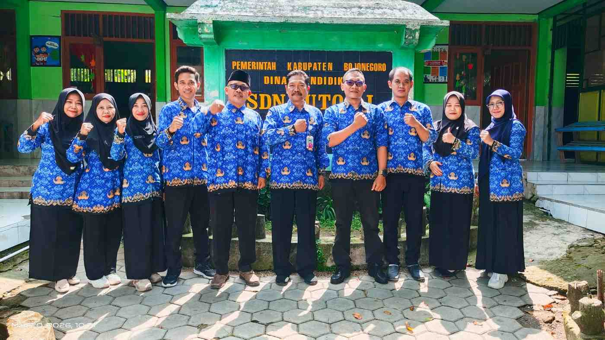

Selamat datang di sistem informasi manajemen sekolah terintegrasi SDN Butoh 1 Kecamatan Ngasem Kabupaten Bojonegoro.

SDN Butoh 1 Ngasem resmi membuka pendaftaran peserta didik baru. Proses verifikasi berkas dilakukan di jam kerja sekolah dengan menyertakan fotokopi Akta Kelahiran dan Kartu Keluarga (KK).
Buka TautanDiberitahukan kepada seluruh wali murid kelas 1-6 mengenai jadwal penyerahan laporan hasil belajar (Rapor) semester genap. Kehadiran orang tua sangat diharapkan demi kelancaran koordinasi akademik.
Buka Tautan